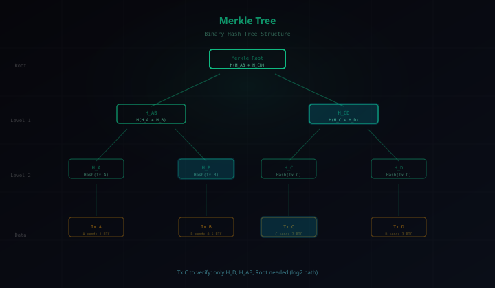

ブロックチェーン入門【後編】― 鍵・トランザクション・スマートコントラクトを実践で理解する

前編ではCompassが「ブロックチェーンとは何か」を丁寧に解説してくれた。後編では俺が技術の裏側を掘り下げる。公開鍵暗号、トランザクションの仕組み、マークルツリー、そしてSolidityでスマートコントラクトを実際に書くところまで。読み終わったら、手を動かしたくなるはずだ。
前編の復習と後編のゴール
前編で学んだ5つのキーワードを30秒で振り返ろう。
- ハッシュ ― データの「指紋」。1文字変えるだけで出力が激変する
- ブロック ― 取引データ＋自分のハッシュ＋前のブロックのハッシュ
- チェーン ― ブロック同士がハッシュで鎖のようにつながる
- 分散 ― 全員がコピーを持つP2Pネットワーク
- 合意形成 ― PoW/PoSで「正しさ」をみんなで決める
前編は「概念の理解」だった。後編のテーマは「技術の裏側と実践」だ。
具体的には、次の5つを扱う。
- 公開鍵暗号 ― 送金の「本人証明」をどう実現するか
- トランザクション ― 送金ボタンを押してから確定するまでの全工程
- マークルツリー ― 大量の取引を効率的に検証するデータ構造
- スマートコントラクト ― Solidityで実際にコードを書く
- 開発エコシステム ― Web3開発者が使うツール群
公開鍵暗号 ― ブロックチェーンの「身分証明書」
前編では「全員が同じ台帳を持つ」と説明した。ではここで疑問が浮かぶ。「AさんがBさんに1BTC送った」という記録を、誰でも書き込めるなら、偽物の送金記録を書けてしまうのでは？
この問題を解決するのが公開鍵暗号だ。
秘密鍵と公開鍵のペア
現実世界の比喩で説明しよう。
- 秘密鍵 ＝ あなただけが持つ印鑑。絶対に他人に見せない
- 公開鍵 ＝ みんなに公開する口座番号。送金先として教える
この2つは数学的にペアになっている。秘密鍵から公開鍵を生成できるが、公開鍵から秘密鍵を逆算することは計算上不可能だ（これを「一方向性」と呼ぶ）。
デジタル署名の仕組み
送金するとき、次のプロセスが発生する。
- Aさんが「Bさんに1BTC送る」というメッセージを作る
- Aさんが自分の秘密鍵でこのメッセージにデジタル署名する
- ネットワークの全員が、Aさんの公開鍵を使って署名を検証する
- 署名が正しければ → Aさん本人が送ったと証明される
ポイントは、秘密鍵を持っている人だけが有効な署名を作れるということだ。公開鍵で「検証」はできるが、「署名」はできない。これが偽の送金を防ぐ仕組みだ。
ウォレットアドレスの正体
ビットコインの「ウォレットアドレス」（例：1A1zP1eP5QGefi2DMPTfTL5SLmv7DivfNa）は、実は公開鍵をハッシュ化して短くしたものだ。生成過程を簡略化すると：
秘密鍵（ランダムな256ビット）→ 公開鍵（楕円曲線暗号）→ ハッシュ化 → ウォレットアドレス
つまり、あなたのウォレットアドレスは公開鍵から生まれ、公開鍵は秘密鍵から生まれる。すべての出発点は秘密鍵だ。だからこそ――
秘密鍵を失くす ＝ 資産を永久に失う
銀行なら「パスワードを忘れました」と窓口に行ける。だがブロックチェーンには窓口がない。秘密鍵は誰にも復元できない。これは分散型の強みであり、同時に最大のリスクでもある。
トランザクションの一生 ― 送金ボタンから確定まで
公開鍵暗号の仕組みがわかったところで、実際の送金がどう処理されるかを追いかけてみよう。ビットコインの場合、送金ボタンを押してから確定するまでに、以下の6ステップを踏む。
Step 1: トランザクションの作成
ウォレットアプリで「Bさんに0.1BTC送る」と入力する。裏側では、「送信元アドレス」「送信先アドレス」「金額」「手数料」を含むデータ構造が作られる。
Step 2: デジタル署名
作成したトランザクションに、送信者の秘密鍵で署名する。これにより「このトランザクションは確かにAさんが作った」と証明される。
Step 3: ブロードキャスト
署名付きトランザクションを、P2Pネットワーク上のノードに送信する。受け取ったノードは、隣接するノードにさらに転送する。数秒で世界中に伝搬する。
Step 4: メモリプール（Mempool）
各ノードは受け取ったトランザクションを検証し（署名の確認、残高の確認など）、問題がなければメモリプールと呼ばれる「待合室」に入れる。まだブロックには入っていない。レストランの「順番待ちリスト」のようなものだ。
Step 5: ブロックへの格納
マイナー（PoWの場合）またはバリデータ（PoSの場合）が、メモリプールからトランザクションを選び出し、新しいブロックにまとめる。手数料の高いトランザクションが優先的に選ばれることが多い。
Step 6: 承認（Confirmation）
ブロックがチェーンに追加されると、そのトランザクションは1承認を得る。次のブロックが追加されると2承認、その次で3承認……と増えていく。
ビットコインでは一般的に6承認（約60分）で「確定」とみなされる。なぜ6なのか？ 攻撃者がチェーンを書き換えるには、6ブロック分の計算を正規のネットワークより速く行う必要があるが、6ブロック以上先行するのは統計的にほぼ不可能だからだ。
実務的な話をすると、少額の決済なら1〜2承認で十分な場合が多い。取引所は大口の入金に6承認を要求するが、コーヒー1杯の決済で60分も待てない。Lightning Networkのようなオフチェーン技術が生まれた背景にはこの問題がある。
マークルツリー ― 大量の取引を1つの指紋にまとめる
1つのブロックには数百〜数千のトランザクションが含まれる。では、ある特定のトランザクションが本当にそのブロックに含まれているかを検証したいとき、全トランザクションを確認する必要があるのか？
答えはノーだ。ここで登場するのがマークルツリー（Merkle Tree）という賢いデータ構造だ。
構造を理解する
マークルツリーは二分木（各ノードが最大2つの子を持つ木構造）で、次のように構築される。
- 葉ノード：各トランザクションのハッシュ値（H_A, H_B, H_C, H_D...）
- 中間ノード：2つの子ノードのハッシュ値を結合してハッシュ化（H_AB = Hash(H_A + H_B)）
- ルートノード：最終的に1つのハッシュ値に集約される（マークルルート）

このマークルルートだけがブロックヘッダーに記録される。つまり、何千ものトランザクションが、たった1つの32バイトのハッシュ値に要約される。
なぜ効率的なのか
たとえば1,024件のトランザクションがあるブロックで、「トランザクションCは本当にこのブロックに含まれるか？」を検証したいとする。
全件を確認するなら1,024個のデータが必要だ。しかしマークルツリーなら、わずか10個のハッシュ値（log2(1024) = 10）だけで検証できる。検証パスに沿った「兄弟ノード」のハッシュ値があれば、ルートまで再計算して一致するかを確認するだけでいい。
SPVノード（軽量検証）
この性質を利用しているのがSPVノード（Simplified Payment Verification）だ。スマートフォンのウォレットアプリは、ブロックチェーン全体（ビットコインなら500GB超）をダウンロードできない。だがブロックヘッダー（約80バイト）とマークルパスだけで、自分のトランザクションが正しくブロックに含まれているかを検証できる。

マークルツリーは名前が難しそうに見えるけど、要は「トーナメント表」です。1回戦で2つずつ対戦して勝者が上がっていくように、2つのハッシュを合わせて1つにまとめていく。最後に残った「優勝者」がマークルルート。この仕組みのおかげで、スマホでもブロックチェーンを検証できるんです。
スマートコントラクト実践 ― Solidityで「貯金箱」を書く
前編で「スマートコントラクト＝自動販売機のようなもの」と説明した。ここでは実際にEthereumのスマートコントラクトをコードで書いてみよう。
Solidityとは
Solidityは、Ethereumのスマートコントラクトを書くためのプログラミング言語だ。JavaScriptに似た構文で、比較的とっつきやすい。コントラクトは一度デプロイするとブロックチェーン上に永久に記録され、誰でも呼び出せる。
「貯金箱」コントラクト
以下は、ETH（Ethereumの通貨）を預けて引き出せる「貯金箱」のコントラクトだ。
// SPDX-License-Identifier: MIT
pragma solidity ^0.8.20;
contract PiggyBank {
address public owner;
// コントラクト作成時にオーナーを記録
constructor() {
owner = msg.sender;
}
// ETHを預け入れる（payableで受け取り可能に）
function deposit() public payable {
require(msg.value > 0, "Must send some ETH");
}
// オーナーだけが引き出せる
function withdraw() public {
require(msg.sender == owner, "Only owner");
payable(owner).transfer(address(this).balance);
}
// 残高を確認
function getBalance() public view returns (uint256) {
return address(this).balance;
}
}順番に見ていこう。
pragma solidity ^0.8.20;― コンパイラのバージョン指定address public owner;― オーナー（貯金箱の持ち主）のアドレスを保存constructor()― コントラクトをデプロイした人が自動的にオーナーになるmsg.sender― トランザクションの送信者アドレス（Solidityの組み込み変数）msg.value― トランザクションに付与されたETHの量payable― ETHの送受信を許可するキーワードrequire()― 条件を満たさないとトランザクションを巻き戻す
ガス代の概念
Ethereumでは、スマートコントラクトの実行にガス代がかかる。これは「計算リソースの使用料」だ。
- 単純な送金：約21,000ガス
- コントラクトのデプロイ：数十万〜数百万ガス
- コントラクトの関数呼び出し：数万〜数十万ガス
ガス代 ＝ ガス量 × ガス単価（Gwei）。ネットワークが混雑するとガス単価が上がるため、同じ操作でも費用が変動する。これが「Ethereumは手数料が高い」と言われる原因でもある。
テストネットでのデプロイ手順
実際に試すなら、メインネット（本物のETHが必要）ではなくテストネットを使う。手順はこうだ。
- MetaMaskをインストールし、Sepoliaテストネットに接続
- Faucet（蛇口）サイトからテスト用ETHを入手
- Remix IDE（ブラウザ上のSolidity開発環境）でコードを書く
- コンパイル → デプロイ → 関数を呼び出してテスト
テストネットなら費用ゼロで何度でも試行錯誤できる。
スマートコントラクトのコードは、一度デプロイすると修正できない。バグがあっても「パッチを当てる」ということができないんだ。だからこそセキュリティ監査が極めて重要になる。2016年のThe DAO事件（約360万ETH＝当時約50億円の流出）は、わずか数行のコードの脆弱性が原因だった。本番にデプロイする前に、監査ツール（Slither、Mythrilなど）や専門の監査会社によるレビューは必須だ。
ブロックチェーン開発の全体像 ― ツールとエコシステム
スマートコントラクトを書けるようになったら、次はブロックチェーン開発者のエコシステムを知っておこう。Web3開発で使う主要なツールを紹介する。
ウォレット：MetaMask
ブラウザ拡張機能として動くEthereumウォレット。ユーザーがDApp（分散型アプリケーション）と対話するための入口だ。秘密鍵の管理、トランザクションの署名、ネットワークの切り替えなどを担う。
開発フレームワーク：Hardhat / Foundry
HardhatはJavaScript/TypeScriptベースの開発フレームワーク。コンパイル、テスト、デプロイ、デバッグを一括管理する。FoundryはRust製の高速なツールチェーンで、Solidityでテストを書ける点が特徴だ。
# Hardhatプロジェクトの初期化
npx hardhat init
# コントラクトのコンパイル
npx hardhat compile
# テストの実行
npx hardhat test
# テストネットへのデプロイ
npx hardhat run scripts/deploy.js --network sepoliaブロックエクスプローラ：Etherscan
ブロックチェーン上のトランザクション、アドレス、コントラクトを閲覧できるWebサービス。デバッグには欠かせない。コントラクトのソースコードを公開（Verify）すると、誰でもコードを読めるようになる。
分散ストレージ：IPFS
ブロックチェーンに大きなファイル（画像、動画など）を直接保存するのはコストが膨大になる。IPFS（InterPlanetary File System）は分散型のファイルストレージで、ファイルのハッシュ値をブロックチェーンに記録し、実データはIPFSに保存するという使い分けが一般的だ。
インデックスプロトコル：The Graph
ブロックチェーン上のデータを効率的に検索するためのプロトコル。ブロックチェーンは「書き込み」は得意だが「検索」は苦手だ。The Graphを使えば、SQLのようにデータを問い合わせられる（GraphQL API）。
Web3開発者ロードマップ
| 段階 | 学ぶこと |
|---|---|
| Step 1 | JavaScript/TypeScriptの基礎（Web開発の土台） |
| Step 2 | ブロックチェーンの基礎概念（この記事の前編・後編） |
| Step 3 | Solidity + Remix IDEでスマートコントラクトを書く |
| Step 4 | Hardhat/Foundry + テスト + デプロイ |
| Step 5 | フロントエンド連携（ethers.js / wagmi） |
| Step 6 | セキュリティ監査 + 本番運用 |
ツールが多くて圧倒されるかもしれませんが、最初の一歩は「Remix IDE + MetaMask + テストネット」の3つだけで大丈夫。ブラウザだけで開発環境が揃います。まずは上で紹介した貯金箱コントラクトをデプロイして動かしてみるのがおすすめです。
まとめ
前編・後編を通じて、ブロックチェーンの全体像を学んだ。最後に整理しよう。
| 前編（概念） | 後編（技術・実践） |
|---|---|
| ハッシュ（データの指紋） | 公開鍵暗号（本人証明） |
| ブロック＋チェーン（連結構造） | トランザクション（送金の全工程） |
| 分散ネットワーク（P2P） | マークルツリー（効率的検証） |
| 合意形成（PoW/PoS） | スマートコントラクト（Solidity実装） |
| ユースケースと限界 | 開発エコシステム（ツール群） |
ブロックチェーン技術は日々進化している。Layer 2によるスケーリング、Account Abstractionによるウォレット体験の改善、ゼロ知識証明によるプライバシー強化――新しい概念が次々と登場している。しかし、この前編・後編で学んだ基礎がわかっていれば、どんな新技術が出てきても「ああ、あの仕組みの発展形だな」と理解できるはずだ。
手を動かしたくなったら、まずテストネットから始めよう。Remix IDEで貯金箱コントラクトをデプロイして、deposit()とwithdraw()を呼んでみる。動くのを見ると、「ブロックチェーン上でプログラムが動く」という感覚がリアルに掴める。そこから先は、CryptoZombies（Solidityの無料チュートリアル）やEthereum公式ドキュメントが次のステップだ。
前編の概念と後編の技術、両方わかればもう怖いものなし。ブロックチェーンは「難しそう」と敬遠されがちですが、一つずつ分解していけば、確かなロジックの積み重ねです。ここまで読んでくれた方は、もう立派にブロックチェーンを理解していますよ。
「秘密鍵＝印鑑、公開鍵＝口座番号」と覚えておけば大丈夫です。大切なのは、秘密鍵を絶対に他人に教えないこと。SNSで「秘密鍵を入力してください」と言われたら、100%詐欺です。銀行の暗証番号を聞いてくる銀行がないのと同じですね。